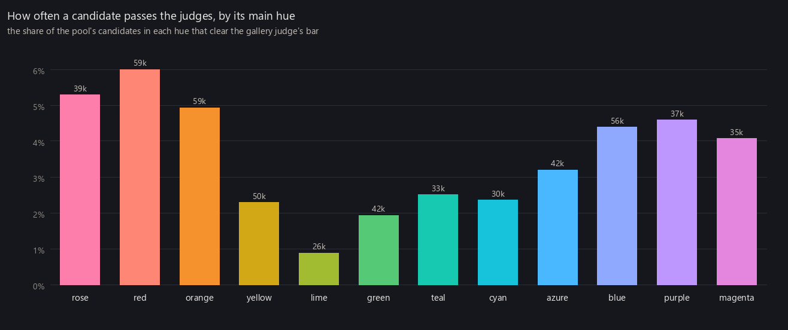
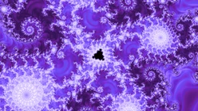
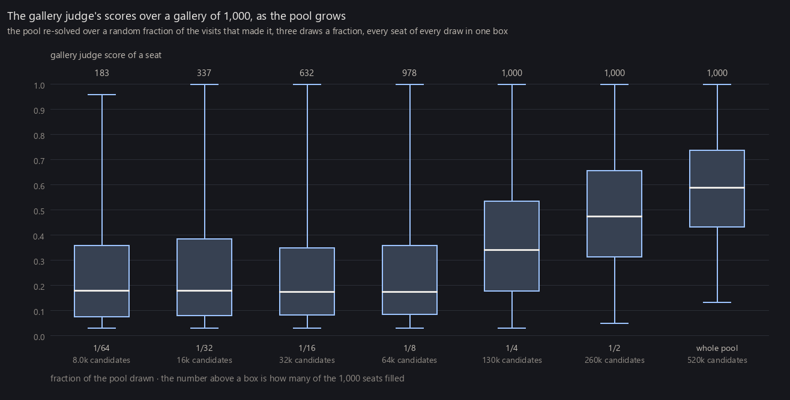

The pipeline has three parts, each covered on its own page. Finding good locations walks each fractal family and keeps the places the location judge thinks are likely to be good. Finding good wallpapers draws each of those places many ways, across rendering modes and palettes, and keeps the best few. Gallery curation picks whole galleries out of everything mined so far. Between them sit two pools, one of locations and one of candidate pictures, and both only ever grow.
Location pool
about 81,000 locations
Candidate pool
about 520,000 candidates, 19,000 passing the judges
How I ran it
Over several weeks I cycled between three tasks: finding new locations, finding better wallpaper candidates at the locations I had, and running quick solves to see how complete and balanced the galleries were across the axes I cared about. Whenever I noticed a deficiency, I aimed the next task at filling it.
Color was the most interesting case. Some color classes just don't make great wallpapers, and the pool showed it. So I added more palettes in those colors, relabeled pictures that used them to retrain the wallpaper judge once I had enough, and then ran targeted mining that hunted for locations and palettes the judges scored well. The chart below shows how often each main hue passes the judges, and the figure after it shows the five best and five worst shades.

Most often

dark vivid purple7.3% pass
More mining kept paying off even after a gallery could be filled. Re-solving the pool at a range of sizes, the seats fill by a quarter of the pool, and the quality of what's seated rises at every doubling after that.

Everything here stays within double precision. Going below that is the subject of Deep zoom rendering, and Fractal atlases shows where in each family the locations ended up.